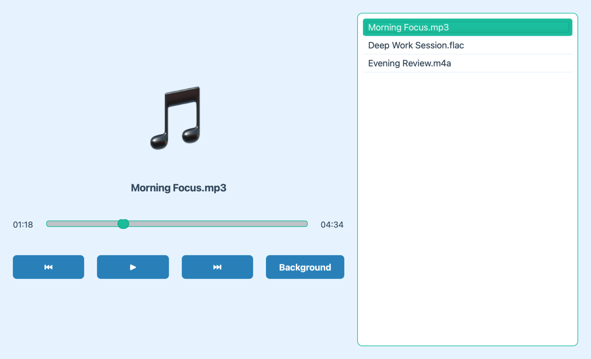
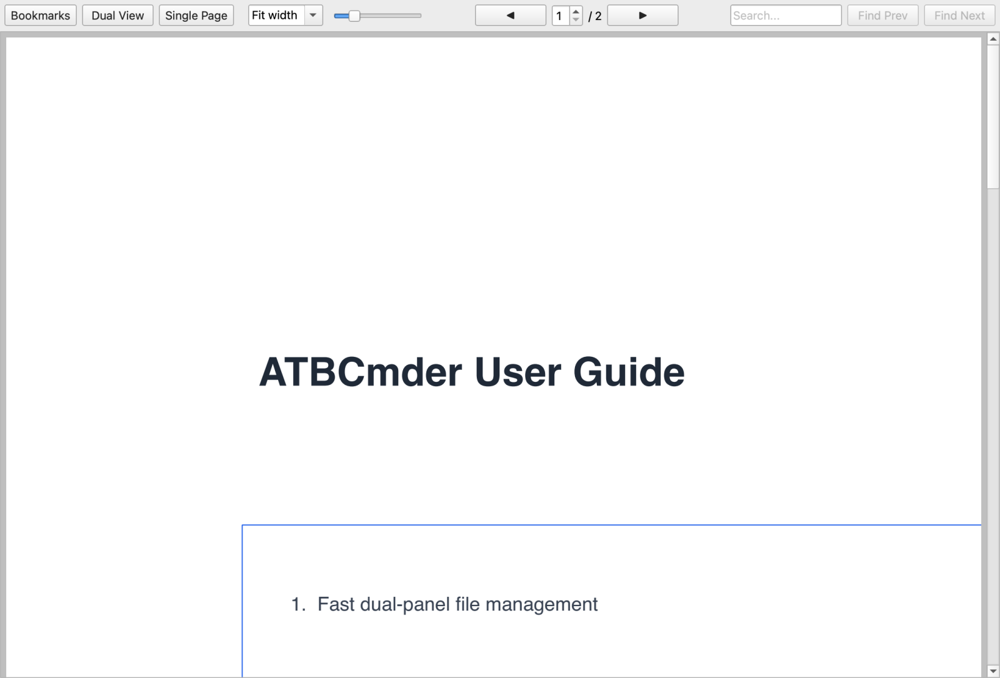
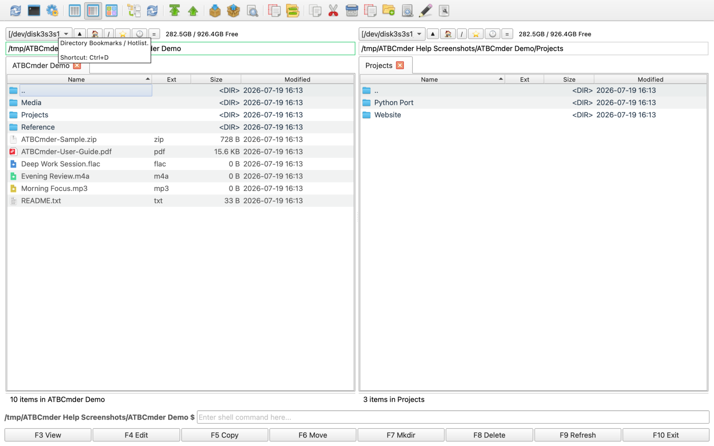

File Management Guide¶
This section covers the advanced file visualization, previewing, and auto-refresh capabilities of ATBCmder.
Previewing Media¶
When you select files in the panel and press F3, ATBCmder launches specialized viewers based on the file type.
Audio Player¶

The dedicated Audio Player handles .mp3, .wav, .flac, .ogg, .m4a, and .aac files.
- Playlist: Automatically builds a playlist. If you select multiple files, they are queued up. If you select a single file, siblings in the same directory are automatically queued.
- Background Playback: You can click the "Background" button to minimize the player. A background indicator will appear in the right panel, allowing uninterrupted music playback while you continue working.
- Append Mode: Selecting more audio files and pressing F3 while the player is in the background will seamlessly append them to the existing playlist.
PDF Viewer¶

The PDF viewer provides a unified top toolbar to maximize your vertical reading space. - View Controls: Toggle the left-hand Bookmarks panel and switch between Single Page and Multi-Page continuous scrolling modes. - Navigation & Zoom: Use the toolbar to navigate pages, jump to a specific page, and adjust zoom (including Fit to Width). - Search: A built-in search box allows you to find specific text within the document. - Seamless Scrolling: When hovering over the bookmark panel, scrolling will intelligently forward to the document view for a cohesive reading experience.
Thumbnails¶
When browsing images, ATBCmder automatically generates clear, high-quality thumbnails for a smooth and visually pleasing experience. This makes it easy to visually identify your photos and graphics without having to open them individually.
Helpful Tooltips¶

ATBCmder features highly informative tooltips designed to help you quickly understand the interface. Whenever you are unsure about a button, menu, or input field, simply hover over it to reveal a comprehensive explanation.
- Feature Description: Explains what the element does.
- Trigger / Shortcut: Shows associated keyboard shortcuts (e.g., Ctrl+D for Hotlist).
- Advanced Help: Provides deep explanations of behavior, placeholders, or edge cases.
Auto-Refresh¶
The file panels automatically update when changes occur on your disk, ensuring you always see the latest state. This behavior is highly configurable in the Options dialog under Auto refresh: - Triggers: You can choose to refresh when files are created, deleted, or renamed, and/or when their size, date, or attributes change. (Attribute changes use an efficient polling mechanism with a customizable interval, default 5 seconds). - Conditions: To save system resources, you can disable auto-refresh when ATBCmder is in the background. You can also define a list of excluded paths and subdirectories that should never trigger an auto-refresh.